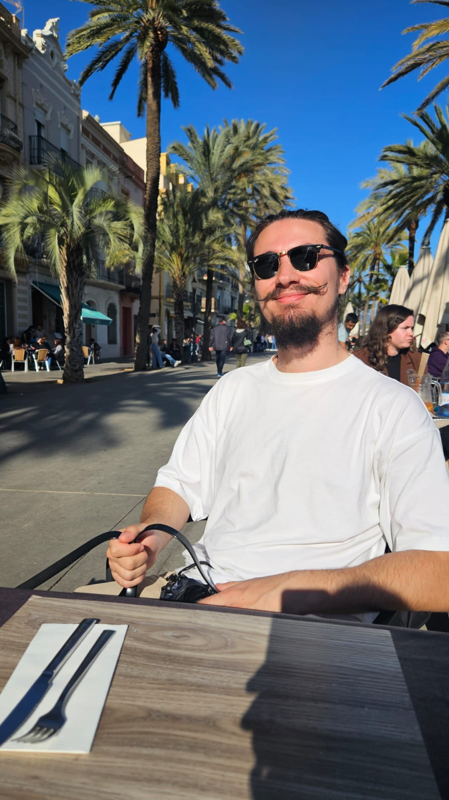

Ghindaru Virgil Petru

Summary
Experienced Bar Manager with knowledge in Bartending and Waitering, sociable and fun, driven to provide guests with a memorable experience and genuine hospitality. Successful at consistently delivering the highest quality service.
Driven to learn as much as possible about Programming and Web Development fields.
Education
Certifications
Work Experience
Barteder - River's Lounge
- Served alcoholic and non-alcoholic beverages in a bar environment.
- Maintained a clean and organized bar area, including bar tables and chairs.
- Assisted with bartending duties during high-volume shifts.
- Maintained accuracy and efficiency when processing sales transactions.
- Anticipated guest needs and provided proactive service.
- Prepared and maintained inventory records.
- Served each guest courteously, quickly and efficiently.
- Refused service to intoxicated guests.
- Managed bar inventory, restocked supplies and placed orders.
- Closed out cash register and prepared cashier report.
- Processed orders on a computerized point of sale system.
- Poured drinks using standard pour according to specifications.
- Verified that guests at the bar were of legal age.
- Cleaned shelving, mixers, cups, blenders and soda guns.
- Followed safety and sanitation policies handling food and beverages.
Bartender - St. Patrick Irish Pub
Bartender - Cyclic Events
Bartender - Funky Lounge
Bartender Cremat 11
Bar Manager - Cremat 11, Cremat Lounge
- Maintains inventory.
- Creates drink and food menus.
- Determines employees schedules.
- Ensures bar is well-stocked and clean.
- Tracks customer behavior and sales.
- Maintains budget and monitors costs.
- Maintains drink recipe documentation.
- Oversees planning for special events.
- Appropriately delegates tasks to staff.
- Selects and purchases liquor and other supplies.
- Oversees staff, including bartenders and barbacks, and, in some cases, bouncers, wait staff, and/or kitchen staff as well.
- Hires, trains, promotes, and, when necessary, disciplines or fires staff.
- Selects music, books bands, and provides input on décor and marketing, including social media and other forms of publicity.
- Initiates and maintains vendor relationships.
- Uses point-of-sale tracking technology and bar and restaurant management platforms.
Skills
- Accomplished mixologist.
- Excellent multitasking ability.
- Problem-solving skills.
- Interpersonal relationship skills.
- Attention to detail.
- Strong leadership ability.
- Organizational skills.
- Customer service skills.
- Knowledge of food, beverage, and hospitality industries.
- Calm under pressure.
- Able to maintain restraint in stressful situations.
- Ability to deescalate tense interactions.
- Judgment and creativity.
- Comfortable with hospitality and sales technology platforms.
- Enthusiasm and lots of energy.
Other